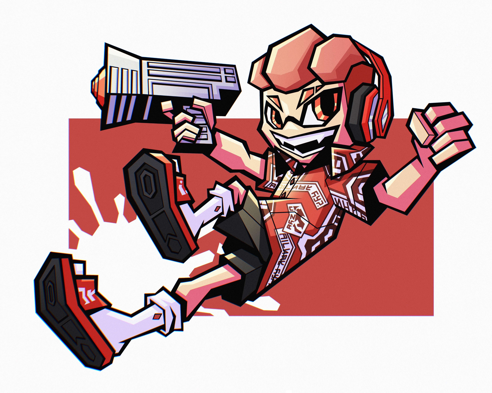

In an alternate reality, around 12,000 years ago... Flooding sea levels would go on to drown out much of Earth's land, its flora and fauna, and its inhabitants. During this era, an unfortunate cat named Katz would live his small life as an aspiring artist. Not wanting all his art to go to waste, he stored his most prized works in a bottle and left it to time.
10,000 years later, a creature called an Inkling - also named Katz - would find this mysterious bottle being sold at an auction. He would go on to win it in hopes of a mystical treasure map, but instead, he grew fond of the creature's works he found inside. After sharing his findings with all his friends, he would vow to continue the legacy.
Now known as Dr. Katz, the young Inkling uses his favorite cat's persona as an icon while collaborating with many famous brands to create blueprints for new Turf War weapons based on the drawings he now treasures.

Dr. Katz, depicted by Gustavo Gomes Donato